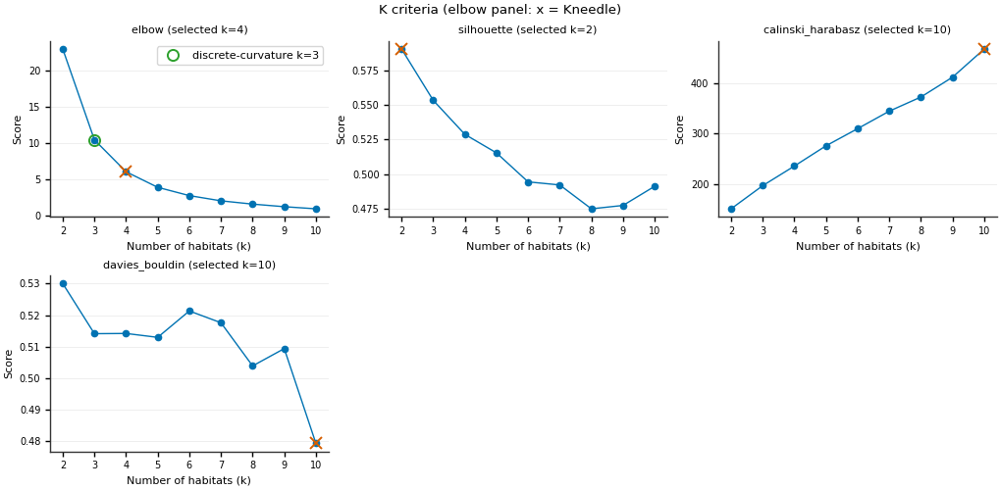
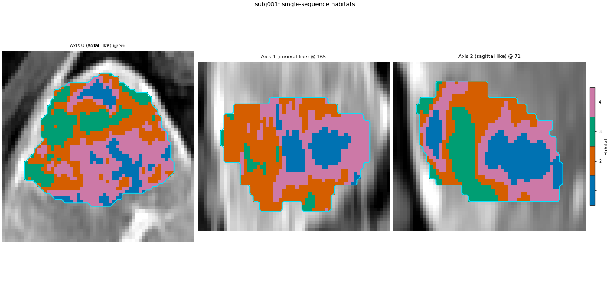
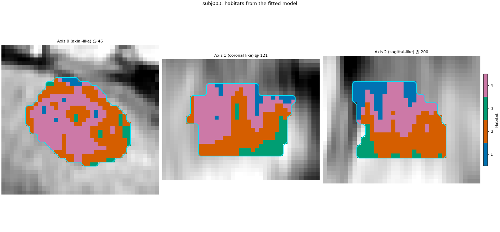
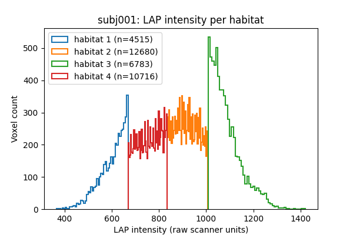

备注
Go to the end to download the full example code.
来自单一序列的栖息地#
背景。 许多研究仅有一条可用 MR 序列，例如单期 post-contrast。生境分析仍可行，但单列特征下生境含义更窄：为肿瘤内强度分层，而非增强动力学模式（需多期）。
目的。 You will run the approved 两步法 analysis of 用 Spec 的两步法生境 on the arterial-phase (LAP) image alone, look at the number of 生境 the 肘部法则 picks, view the 生境图 of a training 患者 and of a new 患者 labelled with the fitted model, and check what each 生境 means by its LAP intensity distribution.
何时使用。 仅有一种序列可用，或需要单序列基线与多期定义对比。
分析定义。 已批准两步法定义，唯一偏差： MODALITIES 仅 "LAP" 而非四 DCE 期。其余阶段、seed、训练/新患者划分（subj001 + subj002 训练，subj003 为新）与 Spec 页相同。
关键术语。 完整定义见 Concepts 。
intensity stratum — 单特征时，各生境为肿瘤内归一化强度带（例如「最暗三分之一」）。
受试者级 normalization -- winsorize and min-max with each patient's own statistics. With one sequence this makes 生境 relative within each tumour: the brightest 生境 is the brightest part of that tumour, whatever its absolute signal.
队列级预处理 — 在池化训练超体素上学 10 等宽 bin，存入模型，新患者复用。
备注
两名训练患者是演示，不是队列。单序列生境不代表灌注进出；勿解读为灌注模式。
将 DATA / MODALITIES / ROI 改为您的预处理树。
加载一个序列#
MODALITIES 仅一项，故每体素一个特征：LAP 强度。两患者训练、第三名为新患者，与四阶段 Spec 页相同。sphinx_gallery_thumbnail_number = 2
from pathlib import Path
import matplotlib.pyplot as plt
import numpy as np
from habit.contracts import cohort_from_directory
from habit.datasets import fetch_demo
from habit.execution import backend_from_policy
from habit.recipes import Study
from habit.spec import HabitatSpec, Spec, Stage
from habit.spec.policy import RunPolicy
from habit.viz import plot_cluster_validation_from_report, plot_habitat_overlay
# Change DATA / MODALITIES / ROI to your preprocessed layout.
DATA = fetch_demo()
MODALITIES = ("LAP",)
ROI = "LAP"
cohort = cohort_from_directory(DATA, modalities=MODALITIES, roi=ROI)
train, new_patient = cohort[:2], cohort[2:3]
print("train: ", list(train.subject_ids))
print("new patient:", list(new_patient.subject_ids))
HABIT demo data (cached)
DATA (preprocessed root): C:\Users\dongm\.habit_data\demo-data-v1\preprocessed
On-disk inventory of this folder:
subjects (5): subj001, subj002, subj003, subj004, subj005
image series: LAP, PVP, delay_3min, pre_contrast
mask keys: LAP, PVP, delay_3min, pre_contrast
example image: images/subj001/delay_3min/WATER__BH_Ax_LAVA_Flex_3min_Series0012.nrrd
example mask: masks/subj001/delay_3min/WATER__BH_Ax_LAVA_Flex_10min_Series0017_mask.nrrd
Your own data must use the same folder tree (change IDs / series names):
DATA/
images/<subject_id>/<modality>/<one image file>
masks/<subject_id>/<roi>/<one mask file>
Then load it with the same call the demos use:
cohort = cohort_from_directory(DATA, modalities=("LAP",), roi="LAP")
Swap DATA / modalities / roi to match your tree. Mask key is often the
same as one image series (here LAP).
train: ['subj001', 'subj002']
new patient: ['subj003']
相同阶段，一列#
Only MODALITIES changed. Winsorize and min-max still run per patient (受试者级); binning still runs once on the 池化 training 超体素 (队列级) and is stored in the model. With one column, binning turns each 超体素 into one of 10 intensity levels, so the fitter clusters at most 10 distinct values.
spec = HabitatSpec(
name="single_sequence_two_step",
stages=(
# extract: a single intensity column (LAP), voxels inside the ROI.
Stage("extract", Spec("raw", {"modalities": list(MODALITIES), "roi": ROI})),
# subject-level: clip to each patient's own 1st..99th percentile.
Stage("preprocess", Spec("winsorize", {"winsor_limits": [0.01, 0.01]})),
# subject-level: rescale to 0..1 with the patient's own min and max.
# With one column, 0 is the darkest and 1 the brightest part of
# THIS tumour.
Stage("preprocess2", Spec("zscore")),
# partition: 30 supervoxels per tumour.
Stage("partition", Spec("kmeans", {"n_supervoxels": 30})),
# pool: stack the training supervoxels.
Stage("pool", Spec("pool")),
# cohort-level: 10 equal-width bins, edges from training rows only.
# fit: 2..10 habitats, elbow rule.
Stage(
"fit",
Spec(
"kmeans",
{"min_habitats": 2, "max_habitats": 10, "validation": "elbow", "n_init": 10},
),
),
Stage("assign", Spec("nearest_centroid")),
Stage("volume", Spec("volume")),
Stage("msi", Spec("msi")),
Stage("ith", Spec("ith_score")),
Stage("graph", Spec("graph", {"include_extended_metrics": False})),
),
random_seed=0,
)
result = Study(spec).fit_predict(
train,
backend=backend_from_policy(
RunPolicy(backend="serial", on_subject_failure="continue")
),
)
print(result.habitat_model.summary())
Cohort.map[_ComputeUnits]: 0%| | 0/2 [00:00<?, ?it/s]
Cohort.map[_ComputeUnits]: 50%|█████ | 1/2 [00:01<00:01, 1.53s/it]
Cohort.map[_ComputeUnits]: 100%|██████████| 2/2 [00:02<00:00, 1.33s/it]
Cohort.map[_ComputeUnits]: 100%|██████████| 2/2 [00:02<00:00, 1.33s/it]
Cohort.map[_AssignPrecomputedUnits]: 0%| | 0/2 [00:00<?, ?it/s]
Cohort.map[_AssignPrecomputedUnits]: 50%|█████ | 1/2 [00:00<00:00, 1.05it/s]
Cohort.map[_AssignPrecomputedUnits]: 100%|██████████| 2/2 [00:01<00:00, 1.18it/s]
Cohort.map[_AssignPrecomputedUnits]: 100%|██████████| 2/2 [00:01<00:00, 1.18it/s]
HabitatModel kmeans-3432f3b65bfec11a
habitats : 4
features (1) : LAP
defining cohort : n=2
modalities : LAP
cohort digest : cc1b16a34cc7478d...
produced by : habitat_model_fitter.kmeans
habit version : 3.0.0
random seed : 0
preprocessing state: inertia, selection_report, validation
生境数量#
HABIT 验证 elbow 与 kneedle 同规则。对 k-means inertia（簇内平方和）运行 KneeLocator ，曲线 convex、方向 decreasing（Satopaa 等，2011，IEEE ICDCS）。将 k 与 inertia 归一化到单位正方形，连首尾点弦，取距弦最远 k；平滑曲线常使膝点偏右于肉眼弯曲。文献“elbow”指观察簇内离散度随 k 变化（Thorndike RL，1953，Psychometrika 18(4):267-276）——非二阶差分公式。离散曲率 elbow（可视 elbow，计算）最大化 inertia 二阶差（HABIT v1.0 前 elbow）；非 Thorndike 公式。生境图保留 Kneedle 的 K；其他 K 仅在下表。完整对比：聚类算法与生境数 。单特征时 Kneedle 膝点可与四期分析不同。应从模型读取 K 而非假设。
print("habitats chosen by HABIT elbow/Kneedle:", result.habitat_model.n_habitats)
report = result.habitat_model.preprocessing_state["selection_report"]
candidates = [int(k) for k in report["candidates"]]
inertia = np.asarray(report["scores"][report["methods"][0]], dtype=float)
def discrete_curvature_elbow_k(cluster_range, inertia_scores):
"""Return k maximizing the second difference of inertia (pre-v1.0 elbow)."""
values = np.asarray(inertia_scores, dtype=float)
cluster_range = [int(k) for k in cluster_range]
if values.size < 3:
return int(cluster_range[int(np.argmin(values))])
return int(cluster_range[int(np.argmax(np.diff(values, n=2))) + 1])
k_kneedle = int(result.habitat_model.n_habitats)
k_discrete = discrete_curvature_elbow_k(candidates, inertia)
from habit.habitat_model import KMeansHabitatModelFitter
_k_table = {"elbow_kneedle": k_kneedle, "discrete_curvature_elbow": k_discrete}
for _name in ("silhouette", "calinski_harabasz", "davies_bouldin"):
_fitter = KMeansHabitatModelFitter(
min_habitats=2, max_habitats=10, validation=_name, n_init=10
)
_fitter.set_random_state(0)
_k_table[_name] = _fitter.fit(result.units, cohort=train).n_habitats
print("K by criterion:")
for _name, _k in _k_table.items():
print(f" {_name}: {_k}")
# Plot every supported k-means criterion (skip gap: expensive on this page).
_criteria = ("elbow", "silhouette", "calinski_harabasz", "davies_bouldin")
_vote = KMeansHabitatModelFitter(
min_habitats=2, max_habitats=10, validation=list(_criteria), n_init=10
)
_vote.set_random_state(0)
_vote_report = dict(
_vote.fit(result.units, cohort=train).preprocessing_state["selection_report"]
)
_vote_report["selected"] = {
"elbow": k_kneedle,
"silhouette": _k_table["silhouette"],
"calinski_harabasz": _k_table["calinski_harabasz"],
"davies_bouldin": _k_table["davies_bouldin"],
}
fig = plot_cluster_validation_from_report(
_vote_report,
title="K criteria (elbow panel: x = Kneedle)",
)
fig.axes[0].plot(
k_discrete,
float(inertia[candidates.index(k_discrete)]),
marker="o",
markersize=8,
markerfacecolor="none",
markeredgecolor="C2",
markeredgewidth=1.4,
linestyle="none",
label=f"discrete-curvature k={k_discrete}",
)
fig.axes[0].legend(loc="best", fontsize=8)
fig.savefig("out/single_sequence_elbow.png", dpi=150, bbox_inches="tight")
plt.show()

habitats chosen by HABIT elbow/Kneedle: 4
K by criterion:
elbow_kneedle: 4
discrete_curvature_elbow: 3
silhouette: 2
calinski_harabasz: 10
davies_bouldin: 10
一名训练患者#
subject = train[0]
habitat_map = result.habitat_maps[0]
fig = plot_habitat_overlay(
subject.image("LAP"),
habitat_map,
title=f"{subject.subject_id}: single-sequence habitats",
crop_to="labels",
)
fig.savefig("out/single_sequence_train.png", dpi=150, bbox_inches="tight")
plt.show()

F:\work\habit_project\habit\viz\habitat_overlay.py:806: UserWarning: Display geometry conflict: image/anatomy direction does not match mask/label direction. Using the mask/label direction so coronal/sagittal superior-up follows the labelled anatomy. Pass direction= to override.
resolved_direction, resolved_spacing = resolve_display_geometry(
来自拟合模型的新患者#
新患者用自身统计归一化，用模型中训练 bin 边界分箱，赋予训练质心。不重拟合。
prediction = Study.from_model(result.habitat_model).predict(new_patient)
fig = plot_habitat_overlay(
new_patient[0].image("LAP"),
prediction.habitat_maps[0],
title=f"{new_patient[0].subject_id}: habitats from the fitted model",
crop_to="labels",
)
fig.savefig("out/single_sequence_new_patient.png", dpi=150, bbox_inches="tight")
plt.show()
# Fraction of the new patient's ROI voxels in each habitat (label 0 is
# outside the ROI and is dropped).
new_labels = np.asarray(prediction.habitat_maps[0].label_array)
inside = new_labels[new_labels > 0]
ids, counts = np.unique(inside, return_counts=True)
for hid, count in zip(ids, counts):
print(f"{new_patient[0].subject_id} habitat {int(hid)}: {count / inside.size:.3f}")

Cohort.map[_LabelAndDescribe]: 0%| | 0/1 [00:00<?, ?it/s]
Cohort.map[_LabelAndDescribe]: 100%|██████████| 1/1 [00:01<00:00, 1.76s/it]
Cohort.map[_LabelAndDescribe]: 100%|██████████| 1/1 [00:01<00:00, 1.76s/it]
F:\work\habit_project\habit\viz\habitat_overlay.py:806: UserWarning: Display geometry conflict: image/anatomy direction does not match mask/label direction. Using the mask/label direction so coronal/sagittal superior-up follows the labelled anatomy. Pass direction= to override.
resolved_direction, resolved_spacing = resolve_display_geometry(
subj003 habitat 1: 0.117
subj003 habitat 2: 0.376
subj003 habitat 3: 0.167
subj003 habitat 4: 0.339
各生境含义#
绘制训练患者各生境 raw LAP 强度。单序列时生境为相邻强度带。生境 id 为任意名非排序：按打印中位数从最暗到最亮阅读。
lap = np.asarray(subject.image("LAP").data)
labels = np.asarray(habitat_map.label_array)
fig, ax = plt.subplots(figsize=(6, 4))
for hid in habitat_map.habitat_ids:
# Voxels of this habitat; label 0 is outside the ROI.
values = lap[labels == hid]
ax.hist(values, bins=50, histtype="step", linewidth=1.5, label=f"habitat {hid} (n={values.size})")
print(f"habitat {hid}: median LAP intensity {np.median(values):.1f}")
ax.set_xlabel("LAP intensity (raw scanner units)")
ax.set_ylabel("Voxel count")
ax.set_title(f"{subject.subject_id}: LAP intensity per habitat")
ax.legend()
fig.savefig("out/single_sequence_intensity_per_habitat.png", dpi=150, bbox_inches="tight")
plt.show()

habitat 1: median LAP intensity 615.0
habitat 2: median LAP intensity 918.0
habitat 3: median LAP intensity 1070.0
habitat 4: median LAP intensity 758.0
如何解读结果#
构建本页时，仅 LAP 分析给出：
K = 4 生境 by the 肘部法则 on subj001 + subj002 (the same count as the four-phase definition on the Spec page, but these are not the same 生境: each one is now an intensity band).
subj001 各生境 LAP 强度中位数为 639（生境 2）、781（生境 4）、924（生境 1）、1068（生境 3）：四档有序带，id 为名称而非秩。
新患者 subj003 的生境 1–4 ROI 分数为 0.325、0.156、0.145、0.374，故各带均存在。
直方图重叠是因为生境按超体素（体素 patch）而非逐体素分配，且归一化逐患者进行。此处未说明这些带与灌注的关系。
接下来去哪里#
本页将四期分析缩减为一列：用 Spec 的两步法生境 。
为单序列增加纹理以超越强度分层：纹理特征图：单独与联合强度 。
选择预处理：受试者级预处理 。
脚本的总运行时间： （0 分 10.367 秒）